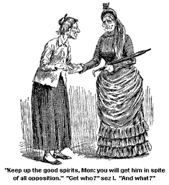
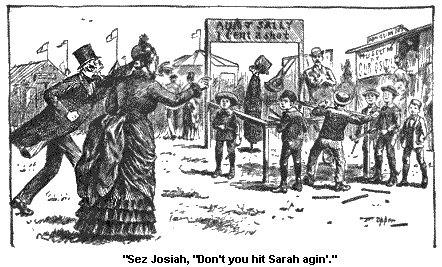
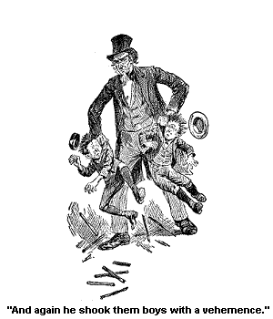
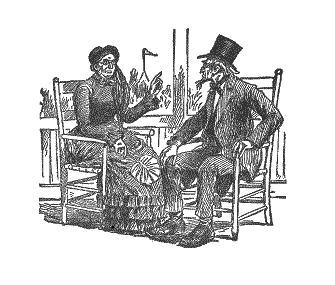

VISIT TO THE INDIAN ENCAMPMENT.
It wuz a fair sunshiny mornin' (and it duz seem to me that the fairness of a Saratoga mornin' seems fairer, and the sunshine more sunshiny than it duz anywhere else), that Josiah and Ardelia and me sot sail for the Indian Encampment, which wuz encamped on a little rise of ground to the eastward of where we wuz.
Ardelia wuz to come to our boardin' place at halfpast 9 A. M., forenoon, and we wuz to set out together from there. And punctual to the very half minute I wuz down on the piazza, with my mantilly hung over my arm and my umberel in my left hand. Josiah Allen was on the right side on me. And as Ardelia hadn't come yet we sot down in a middlin' quiet part of the piazza, and waited for her. And as we sot there, I sez to Josiah, as I looked out on the fair pleasant mornin' and the fair pleasant faces environin' of us round, sez I, "Saratoga is a good-natured place, haint it, Josiah?"
And he said (I mistrust his corns ached worse than common, or sunthin'), he said, he didn't see as it wuz any better-natured than Jonesville or Loontown.
And I sez, "Yes it is, Josiah Allen." Sez I, folks are happier here and more generous, the rich ones seem inclined to help them that need help to a little comfort and happiness. Jest as I have always said, Josiah Allen. When folks are happy, they are more inclined to do good."
"Oh shaw!" sez Josiah. "That never made no difference with me."
"What didn't?" sez I.
"I'm always good," sez he, and he snapped out the words real snappish, and loud.
And I sez mildly, "Wall, you needn't bring the ruff down to prove your goodness."
And he went on: "I don't see as they are so pesky good here; I haint seen nothin' of it."
"Wall," sez I, "when I look over Yaddo, and Hilton Park, it makes me reconciled, Josiah, to have men get rich; it makes me willin', Josiah."
And he sez (cross), He guessed men would get rich whether I wuz willin' or not; he guessed they wouldn't ask me.
"Wall, you needn't snap my head off, Josiah Allen," sez I, "because I love to see folks use their wealth to make pleasant places for poor folks to wander round in, and forget their own narrow rocky roads for a spell. It is a noble thing to do, Josiah Allen; they might have built high walls round 'em if they had been a mind to, and locked the gates and shet out all the poor and tired-out ones, But they didn't, and I am highly tickled at the thought on't, Josiah Allen."
"Wall, I don't shet up our sugar lot, do I? and I have never heerd you say one word a praisin' me up for that."
"That is far different, Josiah Allen," sez I, "there is nothin' there that can git hurt, only stumps. And you have never laid out a cent of money on it. And they have spent thousands and thousands of dollars; and the poorest little child in Saratoga, if it has beauty-lovin' eyes, can go in and enjoy these places jest as much as the owners can. And it is a sweet thought to me, Josiah Allen."
"Oh wall," sez he, "you have probable said enough about it."
Now I never care for the last word, some wimmen do, but I never do. But still I wuzn't goih' to be shet right eff from talkin' about these places, and I intimated as much to him, and he said, "Dumb it all! I could talk about 'em all day, if I wanted to, and about Demorist's Woods too."
"Wall," sez I, "that is another place, Josiah Allen, that is a likely well-meanin' spot. Middlin' curius to look at," sez I, reesonably. "It makes one's head feel sort a strange to see them criss-cross, curius poles, and floors up in trees, and ladders, and teterin' boards, and springs, etc., etc., etc. But it is a well-meanin' spot, Josiah Allen. And it highly tickled me to think that the little fresh air children wuz brung up there by the owner of the woods and the poor little creeters, out of their dingy dirty homes, and filthy air, wandered round for one happy day in the green woods, in the fresh air and sunshine. That wuz a likely thing to do, Josiah Allen, and it raises a man more in my estimation when he's doin' sech things as that, than to set up in a political high chair, and have a lot of dirty hands clapped, and beery breaths a cheerin' him on up the political arena."
"Oh wall," sez Josiah, "the doin's in them woods is enough to make anybody a dumb lunatick. The crazyest lookin' lot of stuff I ever set eyes on."
"Wall, anyway," sez I, "it is a good crazy, if it is, and a well-meanin' one."
"Oh, how cross Josiah Allen did look as he heered me say these words. That man can't bear to hear me say one word a praisin' up another man, and it grows on him.
But good land! I am a goin' to speak out my mind as long as my breath is spared. And I said quite a number of words more about the deep enjoyment it gin' me to see these broad, pleasure grounds free for all, rich and poor, bond and free, hombly and handsome, etc., etc.
And I spoke about the charitable houses, St. Christiana's home, and the Home for Old Female Wimmen, and mentioned the fact in warm tones of how a good, noble-hearted woman had started that charity in the first on't.
And Josiah, while I wuz talkin' about these wimmen, became meak as a lamb. They seemed to quiet him. He looked real mollyfied by the time Ardelia got there, which wuz anon. And then we sot sail for the Encampment.
The Encampment is encamped on one end of a big, square, wild-lookin' lot right back of one of the biggest tarvens in Saratoga. It is jest as wild lookin' and appeerin' a field as there is in the outskirts of Loontown or Jonesville. Why Uncle Grant Hozzleton's stunny pasture don't look no more sort a broke up and rural than that duz. I wondered some why they had it there, and then I thought mebby they kep' it to remember Nater by, old Nater herself, that runs a pretty small chance to be thought on in sech a place as this.
You know there is so much orniment and gildin' and art in the landscape and folks, that mebby they might forget the great mother of us all, that is, right in the thickest of the crowd they might, but they have only to take these few steps and they will see Ma Nater with her every-day dress on, not fixed up a mite. And I s'pose she looks good to 'em.
I myself think that Mother Nater might smooth herself out a little there
with no hurt to herself or her children. I don't believe in Mas goin'
round with their dresses onhooked, and slip-shod, and their hair all stragglin'
out of their combs. (I say this in metafor. I don't spose Ma
Nater ever wore a back
comb or had hooks and eyes on her gown; I say it for oritory, and would
wish to be took in a oritorius way.
And I don't say right out, that the reeson I have named is the one why they keep that place a lookin' so like furey, I said, mebby. But I will say this, that it is a wild-lookin' spot, and hombly.
Wall, on the upper end on't, standin' up on the top of a sort of a hill, the Indian Encampment is encamped. There is a hull row of little stores, and there is swings, and public diversions of different kinds, krokay grounds, etc., etc., etc.
Wall, Ardelia stopped at one of these stores kep' by a Injun, not a West, but a East one, and began to price some wooden bracelets, and try 'em on, and Josiah and me wandered on.
And anon, we came to a tent with some good verses of Scripter on it; good solid Bible it wuz; and so I see it wuz a good creeter in there anyway. And I asked a bystander a standin' by, Who wuz in there, and Why, and When?
And he said it wuz a fortune-teller who would look in the pamm of my hand, and tell me all my fortune that wuz a passin' by. And I said I guessed I would go in, for I would love to know how the children wuz that mornin' and whether the baby had got over her cold. I hadn't heerd from 'em in over two days.
Josiah kinder hung 'round outside though he wuz willin' to have me go in. He jest worships the children and the baby. And he sees the texts from Job on it, with his own eyes.
So I bid him a affectionate farewell, and we see the woman a lookin' out of the tent and witnessin' on't. But I didn't care. If a pair of companions and a pair of grandparents can't act affectionate, who can? And the world and the Social Science meetin' might try in vain to bring up any reeson why they shouldn't.
So I went in, with my mind all took up with the grandchildern. But the first words she sez to me wuz, as she looked close at the pamm of my hand, "Keep up good spirits, Mom; you will get him in spite of all opposition."
"Get who?" sez I, "And what?"
"A man you want to marry. A small baldheaded man, a amiable-lookin', slender man. His heart is sot on you. And all the efferts of the light-complected woman in the blue hat will be in vain to break it up. Keep up good courage, you will marry him in spite of all," sez she, porin' over my pamm and studyin' it as if it wuz a jography.

"For the land's sake!" sez I, bein' fairly stunted with the idees she promulgated.
"Yes, you will marry him, and be happy. But you have had a sickness in the past and your line of happiness has been broken once or twice."
Sez I, "I should think as much; let a woman live with a man, the best man in the world for 20 years, and if her line of happiness haint broke more than once or twice, why it speaks well for the line, that is all. It is a good, strong line."
"Then you have been married?" says she.
"Yes, Mom," sez I.
"Oh, I see, down in the corner of your hand is a coffin, you are a widow, you have seen trouble. But you will be happy. The mild, bald gentleman will make you happy. He will lead you to the altar in spite of the light-complected woman with the blue bat on."
Ardelia Tutt had on a blue hat, the idee! But I let her go on. Thinkses I, "I have paid my money and now it stands me in hand to get the worth on't." So she comferted me up with the hope of gettin' my Josiah for quite a spell.
Gettin' my pardner! Gettin' the father of my childern, and the grandparent of my grandchildren! Jest think on't, will you?
But then she branched off and told me things that wuz truly wonderful. Where and how she got 'em wuz and is a mistery to me. True things, and strange.
Why it seemed same as if them tall pines, that wuz a whisperin' together over the Encampment wuz a peerin' over into my past, and a whisperin' it down to her. Or, in some way or other, the truth wuz a bein' filtered down to her comprehension through some avenue beyond our sense or sight.
It is a curious thing, so I think, and so Josiah thinks. We talked it over after I came out, and we wuz a wanderin' on about the Encampment. I told him some of the wonderful things she had told me and he didn't believe it. "For," sez he, "I'll be hanged if I can understand and I won't believe anything that I can't understand!"
And I pointed with the top of my umberel at a weed growin' by the side of the road, and sez I, "When you tell me jest how that weed draws out of the back ground jest the ingredients she needs to make her blue foretop, and her green gown, then I'll tell you all about this secret that Nater holds back from us a spell, but will reveel to us when the time comes."
"Oh shave!" sez Josiah, "I guess I know all about a jimson weed. Why they groin; that is all there is about them. They grow, dumb 'em. I guess if you'd broke your back as many times as I have a pullin' 'em up, yon would know all about' em. Dumb their dumb picters," sez he, a scowlin' at 'em.
It wuz the same kind of weed that growed in our onion beds. I recognized it. Them and white daisies, our garden wuz overrun by 'em both.
But I sez, "Can you tell how the little seed of this weed goes down into the earth and selects jest what she wants out of the great storehouse below? She never comes out in a pink head-dress or a yellow gown. No, she always selects what will make the blue. It shows that it has life, intelligence, or else it couldn't think, way down under the ground, and grope in the dark, but always gropin' jest right, always a thinkin' the right thing, never, never in the hundreds and thousands of years makin' a mistake. Why, you couldn't do it, Josiah Allen, nor I couldn't.
"And we set and see these silent mysteries a goin' on right at our door-step day by day, and year by year, and think nothin' of it, because it is so common. But if anything else, some new law, some new wonder we don't understand comes in our way, we are ready to reject it and say it is a lie. But you know, Josiah Allen," sez I, jest ready to go on eloquent -
But I wuz interrupted jest here by my companion hollerin' up in a loud voice to a boy, "Here! you stop that, you young scamp! Don't you let me see you a doin' that agin!"
Sez I, "What is it, Josiah Allen?"
"Why look at them young imps, a throwin' sticks at that feeble old woman, over there."
I looked, and my own heart wuz rousted up with indignation. I stood where I couldn't see her face, but I see she wuz old, feeble, and bent, a withered poor old creeter, and they had marked up over her, her name, Aunt Sally.
I too wuz burnin' indignant to see a lot of young creeters a throwin' sticks at her, and I cried out loud, "Do you let Sarah be."
They turned round and laughed in our faces, and I went on: "I'd be ashamed of myself if I wuz in your places to be a throwin' sticks at that feeble old woman. Why don't you spend your strengths a tryin' to do sunthin' for her? Git her a home, and sunthin' to eat, and a better dress. Before I'd do what you are a doin' now, I'd growvel in the dust. Why, if you wuz my boys I'd give you as good a spankin' as you ever had."
But they jest laughed at us, the impudent Greeters. And one of the boys at that minute took up a stick and threw it, and hit Sarah right on her poor old head.
Sez Josiah, "Don't you hit Sarah agin."

Sez the boys, "We will," and two of 'em hit her at one time. And one of 'em knocked the pipe right out of her mouth. She wuz a smokin', poor old creeter. I s'pose that wuz all the comfort she took. But did them little imps care? They knocked her as if they hated the sight of her. And my Josiah (I wuz proud of that man) jest advanced onto 'em, and took 'em one in each hand, and gin 'em sech a shakin', that I most expected to see their bones drop out, and sez he between each shake, "Will you let Sarah alone now?"
I wuz proud of my Josiah, but fearful of the effect of so much voyalence onto his constitution, and also onto the boys' frames. And I advanced onto the seen of carnage and besought him to be calm. Sez he, "I won't be calm!" sez he, "I haint the man, Samantha, to stand by and see one of your sect throwed at, as I have seen Sarah throwed at, without avengin' of it."
And agin he shook them boys with a vehemence. The pennies and marbles in their pockets rattled and their bones seemed ready to part asunder. I wuz proud of that noble man, my pardner. But still I knew that if their bones was shattered my pardner would be avenged upon by incensed parents. And I sez, "I'd let 'em go now, Josiah. I don't believe they'll ever harm Sarah agin." Sez I, "Boys, you won't, will you ever strike a poor feeble old woman agin?." Sez I, "promise me, boys, not to hurt Sarah."

I don't know what the effect of my words would have been, but a man came up just then and explained to me, that Aunt Sally wuz a image that they throwed at for one cent apiece to see if they could break her pipe.
I see how it wuz, and cooled right down, and so did Josiah. And he gin the boys five cents apiece, and quiet rained down on the Encampment.
But I sez to the man, "I don't like the idee of havin' my sect throwed at from day to day, and week to week." Sez I, "Why didn't you have a man fixed up to throw at, why didn't you have a Uncle Sam?" Sez I, "I don't over and above like it; it seems to be a sort of a slight onto my sect."
Sez the man winkin' kind a sly at Josiah, "It won't do to make fun of men, men have the power in their hands and would resent it mebby. Uncle Sam can't be used jest like Aunt Sally."
Sez I, "That haint the right spirit. There haint nothin' over and above noble in that, and manly."
I wuz kinder rousted up about it, and so wuz Josiah. And that is I s'pose the reasun of his bein' so voyalent, at the next place of recreation we halted at Josiah see the picture of the mermaid; that beautiful female, a, settin' on the rock and combin' her long golden hair. And he proposed that we should go in and see it.
Sez I, "It costs ten cents apiece, Josiah Allen. Think of the cost before it is too late." Sez I, "Your expenditure of money today has been unusial." Sez I, "The sum of ten cents has jest been raised by you for noble principles, and I honer you for it. But still the money has gone." Sez I, "Do you feel able to incur the entire expense?"
Sez he, "All my life, Samantha, I have jest hankered after seein' a mermaid. Them beautiful creeters, a settin' and combin' their long golden tresses. I feel that I must see it. I fairly long to see one of them beautiful, lovely bein's before I die."
"Wall," sez I, "if you feel like that, Josiah Allen, it is not fur from me to balk you in your search for beauty. I too admire loveliness, Josiah Allen, and seek after it." And sez I, "I will faithfully follow at your side, and together we will bask in the rays of beauty, together will we be lifted up and inspired by the immortal spirit of loveliness."
So payin' our 30 cents we advanced up the steps, I expectin' soon to be made happy, and Josiah held up by the expectation of soon havin' his eyes blest by that vision of enchantin' beauty, he had so long dremp of.
He advanced onto the pen first and before I even glanced down into the deep where as I s'posed she set on a rock a combin' out her long golden hair, a singin' her lurin' and enchanted song, to distant mariners she had known, and to the one who wuz a showin' of her off, before I had time to even glance at her, the maid, I was dumbfounded and stood aghast, at the mighty change that came over my pardner's linement.
He towered up in grandeur and in wrath before me. He seemed almost like a offended male fowl when ravenin' hawks are angerin' of it beyond its strength to endure. I don't like that metafor; I don't love to compare my pardner to any fowl, wild or tame; but my frenzied haste to describe the fearful seen must be my excuse, and also my agitation in recallin' of it.
He towered up, he fluttered so to speak majestically, and he says in loud wild axents that must have struck terror to the soul of that mariner, "Where is the hair-comb?"
And then he shook his fist in the face of that mariner, and cries out once agin, "Where is them long golden tresses? Bring 'em on this instant! Fetch on that hair-comb, in a minute's time, or I'll prosecute you, and sue you, and take the law to you - !"
The mariner quailed before him and sez I, "My dear pardner, be calm! Be calm!"
"I won't be calm!"
Sez I mildly, but firmly, "You must, Josiah Allen; you must! or you will break open your own chest. You must be calm."
"And I tell you I won't be calm. And I tell you," says he, a turnin' to that destracted mariner agin "I tell you to bring on that comb and that long hair, this instant. Do you s'pose I'm goin' to pay out my money to see that rack-a-bone that I wouldn't have a layin' out in my barn-yard for fear of scerin' the dumb scere-crows out in the lot. Do you s'pose I'm goin' to pay out my money for seein' that dried-up mummy of the hombliest thing ever made on earth, the dumbdest, hombliest; with 2 or 3 horse hairs pasted onto its yellow old shell! Do you spose I'm goin' to be cheated by seein' that, into thinkin' it is a beautiful creeter a playin' and combin' her hair? Bring on that beautiful creeter a combin' out her long, golden hair this instant, and bring out the comb and I'll give you five minutes to do it in."
He wuz hoorse with emotion, and he wuz pale round his lips as anything and leis eyes under his forward looked glassy. I wuz fearful of the result.
Thinkses I, I will look and see what has wrecked my pardner's happiness and almost reasen. I looked in and I see plain that his agitation was nothin' to be wondered at. It did truly seem to be the hombliest, frightfulest lookin' little thing that wuz ever made by a benignant Providence or a taxy-dermis. I couldn't tell which made it. I see it all, but I see also, so firm, sot is my reasun onto its high throne on my heart, I see that to preserve my pardner's sanity, I must control my reasun at the sight that had tottered my pardner's.
I turned to him, and tried to calm the seethin' waters, but he loudly called for the comb, and for the tresses, and the lookin' glass. And, askin' in a wild' sarcastic way where the song wuz that she sung to mariners? And hollerin' for him to bring on that rock at that minute, and them mariners, and ordered him to set her to singin'.
The idee! of that little skeletin with her skinny lips drawed back from her shinin' fish teeth, a singin'. The idee on't!
But truly, he wuz destracted and knew not what he did. The mariner in charge looked destracted. And the bystanders a standin' by wuz amazed, and horrowfied by the spectacle of his actin' and behavin'. And I knew not how I should termonate the seen, and withdraw him away from where he wuz.
But in my destraction and agony of sole, I bethought me of one meens of quietin' him and as it were terrifyin' him into silence and be the meens of gettin' on him to leave the seen. I begoned to Ardelia to come forward and I sez in a whisper to her, "Take out your pencil and a piece of paper and stand up in front of him and go to writin' some of your poetry,"
And then I sez agin in tender agents, "Be calm, Josiah."
"And I tell you that I won't be calm! And I tell you," a shakin' his fist at that pale mariner, "I tell you to bring out -- "
At that very minute he turned his eyes onto Ardelia, who stood with a kind of a fur-away look in her eyes in front of him with the paper in her hand, and sez he to me, "What is she doin'?"
"She is composin' some poetry onto you, Josiah Allen," sez I, in tremblin' axents; for I felt that if that skeme failed, I wuz undone, for I knew I had no ingredients there to get him a extra good meal. No, I felt that my tried and true weepon wuz fur away, and this wuz my last hope.
But as I thought these thoughts with almost a heatlightnin' rapidety, I see a change in his liniment. It did not look so thick and dark; it began to look more natural and clear.
And sez he in the same old way I have heerd him say it so many times, "Dumb it all! What duz she want to write poetry on me for? It is time to go home." And so sayin', he almost tore us from the seen.
I gin Ardelia that night 2 yards of lute-string ribbon, a light pink, and didn't begrech it. But I have never dast, not in his most placid and serene moments - I have never dast, to say the word "Mermaid' to him.
Truly there is something that the boldest female pardner dassent do. Mermaids is one of the things I don' dast to bring up. No! no, fur be it from me to say "Mermaid" to Josiah Allen.
